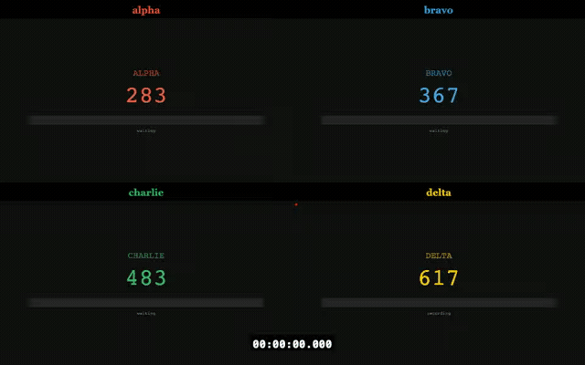

Race browsers
head to head
A command-line showdown that pits 2 to 4 browsers against each other, records the whole thing, and crowns a champion.
No judges · no bias · just milliseconds
$ npx race-for-the-prize demo:lauda-vs-hunt
Roll the tape
Every recorded race ends in the player: each racer's recording, trimmed to the same start gun and replayed side by side, with the clock running and a badge on whoever crosses the line.

What you get
Every race ends with a podium, a folder you can reread months later, and — unless you switch recording off for the numbers alone — a replay.
🏎️ Live race animation
The terminal calls the race while the browsers are still running — positions, messages, and the moment someone takes the lead.
🎬 Side-by-side replay
An interactive HTML player with frame-accurate calibration, segment navigation, and placement badges as each racer crosses the line.
📊 Medals and bar charts
Every timed section compared racer by racer, with an overall winner decided on total time — and ties called as ties.
📈 Performance profiles
Transfer size, request count, script execution, layout time, TTFB, FCP, LCP, CLS — collected straight from the DevTools protocol.
🌧️ Track conditions
Network throttling, CPU ballast, and repeated runs with a median. Race every combination and watch the winner flip.
🗂️ A results folder that keeps
Videos, Chrome traces, a Markdown report card, and the exact command and settings the race ran with.

The starting grid
Four races ship with the tool. Watch a real one before you write your own — the replays below are the reports those races produced, so they are heavy pages, videos and all.
| Command | The race | Replay |
|---|---|---|
| demo:lauda-vs-hunt | The classic rivalry — two Wikipedia pages, scrolled to the bottom | watch ↗ |
| demo:lebron-vs-curry | The GOAT debate — dribble three times, then race back to the top | watch ↗ |
| demo:react-vs-angular | Framework cage match — React, Angular, Svelte and htmx, four racers | watch ↗ |
| demo:caching-comparison | Encrypted cache vs plain cache vs no cache, both halves timed | run it yourself |
Write your own in five minutes
A race is a folder: either one Playwright script per racer, or one shared script plus the racers listed in settings.json. Either way your page arrives with a stopwatch already attached.
$ race-for-the-prize --init my-race
$ race-for-the-prize my-race --network=slow-3g --runs=3
Writing a race
Multi-spec and shared-spec modes, the race API, setup and teardown scripts.
What to race
A/B tests, framework shoot-outs, third-party script cost, mobile conditions.
Flags & settings
Every CLI flag, the throttling presets, and the full settings.json reference.
Reading results
The results folder, the HTML player, the performance matrix, the podium.
Skinning the player
Design tokens and how to put your own livery on a race report.
Working on the tool
Running from a clone, project structure, tests, and the slide deck.
Credits
The tools, the song and the people this whole thing stands on.
A word from the stewards
The aim here is not laboratory accuracy — it's to showcase performance, to make it visible, to compare how a page behaves under different conditions.
Screen recording and frame trimming are side effects stacked on top of the side effects every browser metric already carries. Question the numbers, double-check the findings, and treat the tool as a storyteller with a stopwatch rather than an oracle.